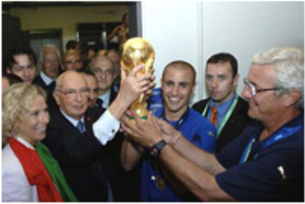

Футбол
Футбол — командный вид спорта, в котором целью является забить мяч в ворота соперника ногами или другими частями тела (кроме рук) большее количество раз, чем команда соперника.
Полные команды включают 11 основных игроков (10 полевых и 1 вратарь) и от 3 до 7 запасных. Игры, проводимые под эгидой ФИФА предполагают не более 3-х замен. В прочих состязаниях – по договоренности, при условии, что команды придут к согласию об их числе и оповестят судью. До матча предоставляют полные списки участников. О замене оповещают судью соответствующим образом. Любой футболист из полного списка может заменить другого, в том числе голкипера.
Матч состоит из двух 45-минутных половин с перерывом не более 15 минут. В футболе допускается уменьшение времени одного периода до 40 минут, но об изменениях договариваются до начала игры. В ряде случаев к полному времени добавляют минуты, ушедшие, например, на замену, анализ тяжести травм играющих.
Существует целая система разных состязаний. Они имеют разный уровень и проводятся в определенное время. Организацией соревновательных игр занимается федерация. Турниры имеют свой регламент, в котором утверждается состав, схема и прочее. Крупные турниры собирают полные трибуны болельщиков, которые ждут этих событий несколько лет.
Чемпионат мира по футболу является крупнейшим спортивным событием. Нынешний полный формат состязаний включает этап квалификации, который проходит в течение предыдущих 3-х лет, чтобы определить какие команды претендуют на этап турнира. Полный состав соревнующихся за звание чемпионского титула включает 32 команды, в которые автоматически входит принимающая сторона. Играют ежедневно в течение месяца.